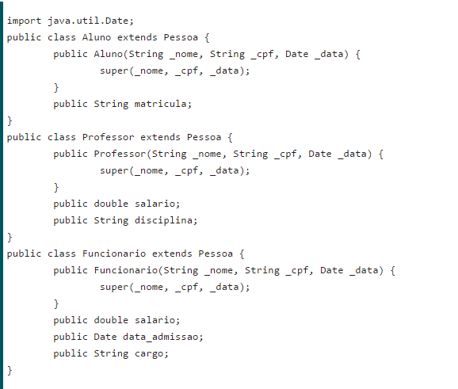
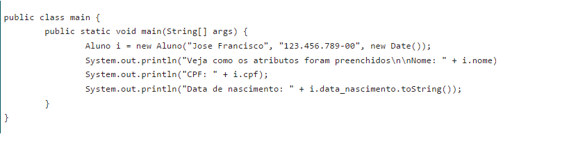
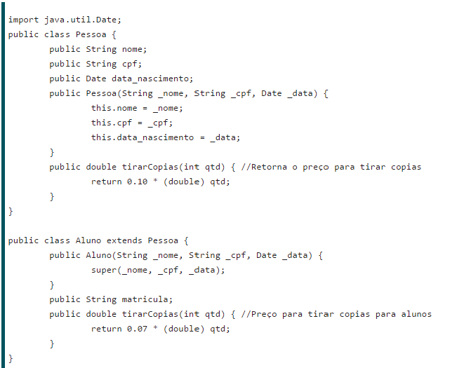
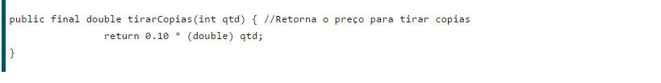

INTRODUÇÃO
Herança
A herança é um princípio da POO que permite a criação de novas classes a partir de outras previamente criadas. Essas novas classes são chamadas de subclasses, ou classes derivadas; e as classes já existentes, que deram origem às subclasses, são chamadas de superclasses, ou classes base. Deste modo é possível criar uma hierarquia dessas classes, tornando, assim, classes mais amplas e classes mais específicas.Uma subclasse herda métodos e atributos de sua superclasse; apesar disso, pode escrevê-los novamente para uma forma mais específica de representar o comportamento do método herdado.
Classe Pessoa:

Neste primeiro código, vemos que a classe pessoa possui nome, CPF, e data de nascimento como atributos; além de um construtor, que recebe estes três dados como parâmetro, e assim preenche os atributos do objeto. Na criação de um objeto Pessoa, o programa deve fornecer seus dados. Analisando professores, alunos e funcionários, vemos que todos podem (devem) ter cpf, nome e data de nascimento; portanto, nada mais justo que criar subclasses de Pessoa para representa-los. Em Java, criamos classes derivadas utilizando a palavra extends, seguida do nome da superclasse.
Classes Aluno, Funcionario e Professor:

As novas classes criadas possuem suas características (atributos e métodos) próprias, mas possuem também propriedades comuns: os atributos nome, data de nascimento e CPF. Podemos ver que cada construtor das novas classes possui uma chamada super(_nome, _cpf, _data);. E o que seria isso? A palavra super representa uma chamada de método ou acesso a um atributo da superclasse, por isso tem esse nome. No nosso caso, estamos usando o super para invocar construtor da superclasse Pessoa, que recebe os três parâmetros e preenche os atributos do objeto. Então, quando criarmos um objeto do tipo Aluno, por exemplo, utilizando “new Aluno(“nome”,”cpf”,new Date())”, a classe Aluno invocará o construtor Pessoa(String,String,Date), e então seus atributos serão preenchidos com os dados enviados por parâmetro.
Testando a chamada super:

Devemos saber que todos os métodos e atributos públicos e protegidos da superclasse serão herdados, caso utilize-se o extends Classe na definição de uma nova classe derivada. Portanto, os métodos e atributos privados (private) não serão herdados, e não teremos acesso a eles nem com a utilização da palavra especial super. Apesar de a classe derivada herdar os comportamentos públicos da classe base, nada (ou quase nada) impede que implementemos de novo os métodos e atributos que quisermos na subclasse. Podemos sobrescrever métodos das superclasses, criando assim um novo comportamento para funções específicas.
Sobrescrita de método para cálculo de preço de cópias para alunos e demais pessoas:

Como podemos observar, a cópia é mais barata para os alunos, então o método precisou ser sobrescrito. Precisamos lembrar que as outras duas classes que permaneceram intactas, Funcionario e Professor, herdarão o método tirarCopias(int); da classe Pessoa, e, portanto, terão suas cópias por 0.10 centavos cada, enquanto os alunos por 0.07 centavos cada. Anteriormente eu havia deixado subentendido que alguma coisa pode impedir que métodos sejam sobrescritos, e então vamos falar disso agora. Trata-se da palavra especial final, utilizada na declaração de métodos e atributos, que só permite uma declaração da variável ou comportamento em questão. Isso significa que se na listagem 3 o método tirarCopias(int); da classe pessoa fosse definido como final, seria proibido reescrevê-lo na subclasse.
Declaração de método final:

Dessa forma, a classe Aluno (ou qualquer outra classe derivada de Pessoa) estaria proibida de sobrescrever o método tirarCopias(int);.